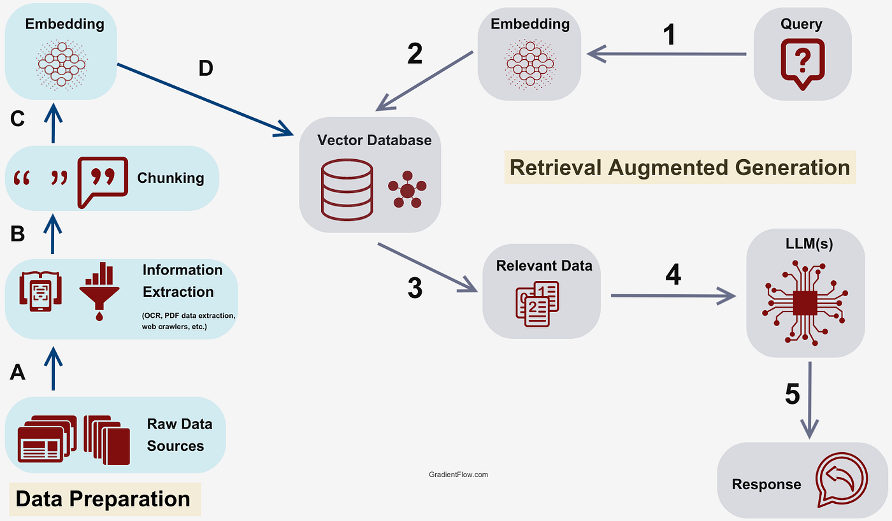

RAG-Based Intelligent Chatbot
An AI-powered chatbot using Retrieval-Augmented Generation for accurate and context-aware responses

Role
Full Stack Developer
Duration
3 Months
Technologies
Python, LangChain, OpenAI
Status
Completed
Project Overview
This project implements a sophisticated RAG (Retrieval-Augmented Generation) chatbot that combines the power of large language models with a custom knowledge base. The system retrieves relevant information from documents and uses it to generate accurate, context-aware responses.
Key Features
- Document Processing: Automated ingestion and processing of various document formats (PDF, TXT, DOCX)
- Vector Database: Efficient storage and retrieval using ChromaDB for semantic search
- Context-Aware Responses: Generates answers based on retrieved relevant information
- Streamlit Interface: User-friendly web interface for easy interaction
- Conversation Memory: Maintains context across multiple turns of conversation
- Source Citations: Provides references to source documents for transparency
Technical Implementation
Architecture
The system follows a modular architecture with separate components for document processing, embedding generation, vector storage, and response generation. This design ensures scalability and maintainability.
Technologies Used
- LangChain: Framework for building LLM applications
- OpenAI API: GPT models for text generation
- ChromaDB: Vector database for semantic search
- Streamlit: Web framework for the user interface
- Python: Core programming language
Challenges & Solutions
One of the main challenges was optimizing the retrieval process to balance between accuracy and speed. This was solved by implementing a hybrid search approach combining semantic similarity with keyword matching, and using caching strategies to improve response times.
Results & Impact
The chatbot successfully handles complex queries with high accuracy, providing relevant answers based on the knowledge base. It has been deployed for internal use and has significantly reduced the time needed to find information in large document collections.
Future Enhancements
- Multi-language support for international users
- Integration with additional data sources (databases, APIs)
- Advanced analytics dashboard for usage tracking
- Fine-tuning custom models for domain-specific knowledge